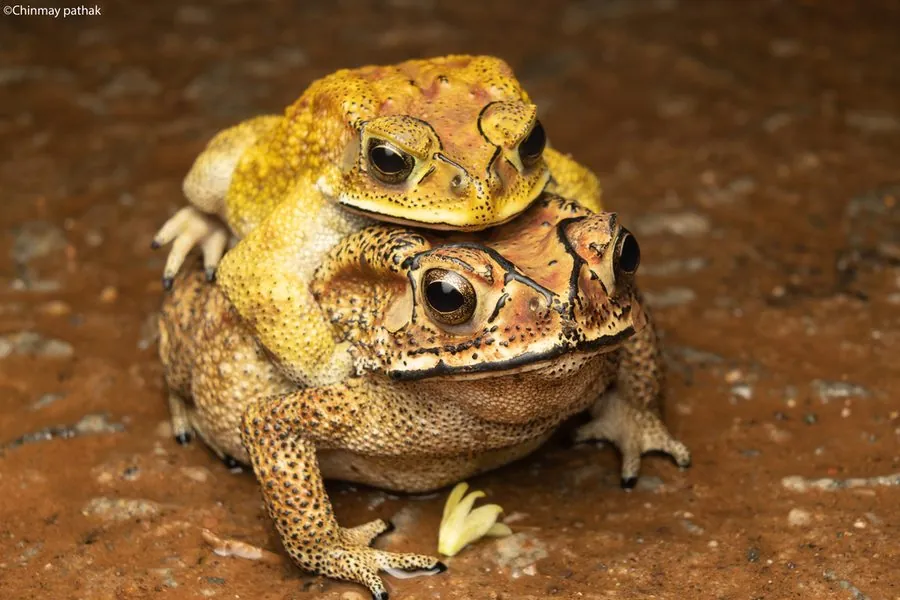

两栖动物 · 动物界
黑眶蟾蜍 Duttaphrynus melanostictus

亚洲南部常见的大型蟾蜍，头部有黑色骨质眶脊，耳后腺和皮肤腺能分泌蟾酥毒液，夜晚常在路灯下捕食昆虫。
- 分类
- 门脊索动物门纲两栖纲目无尾目科蟾蜍科属黑眶蟾蜍属
- 栖息环境
- 农田、草地、村舍、城市公园及道路旁的潮湿处
- 地理分布
- 中国南方、南亚和东南亚广大地区
- 保护级别
- IUCN 无危（LC）；中国“三有”保护动物
物种志
黑眶蟾蜍体长 6–10 厘米，雌蟾明显大于雄蟾。皮肤粗糙，密布疣粒，背面呈黄褐色、灰褐色或黑褐色，腹面淡黄色；头部沿眼眶、鼓膜和吻部有一圈黑色骨质棱脊，像戴着一副黑框眼镜，因此得名。耳后腺大而明显，能分泌乳白色毒液。
它广泛分布于中国南方、南亚和东南亚，栖息于农田、草地、村舍、城市公园和道路旁，对人类活动环境适应良好。夜间活动，常在路灯下捕食趋光的蛾类、甲虫和白蚁。繁殖期在春夏，雄蟾抱对后雌蟾产下长串胶质卵带，蝌蚪约一个月变态。它的蟾酥可入药，但毒液误食或入眼可致中毒，接触后应及时洗手。
形态与习性
- 食性蛾类、甲虫、白蚁等昆虫
- 体长约 6–10 cm，雌蟾更大
- 毒性耳后腺分泌蟾酥毒液，误食或入眼可致中毒
- 繁殖春夏产下长串胶质卵带，蝌蚪约一个月变态
- 活动节律夜行性，常在路灯下捕食
- 寿命野外约 5–10 年
趣味知识
- 黑眶蟾蜍头部的黑色骨质棱脊像一副黑框眼镜，是它的标志。
- 它的耳后腺分泌物可制成中药蟾酥，但本身有毒，不能随意食用。
- 城市路灯下的黑眶蟾蜍会守候趋光飞虫，是夜间的捕虫能手。